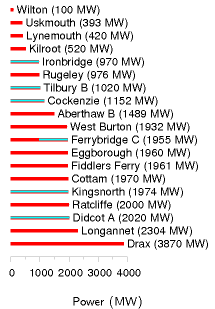
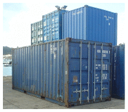
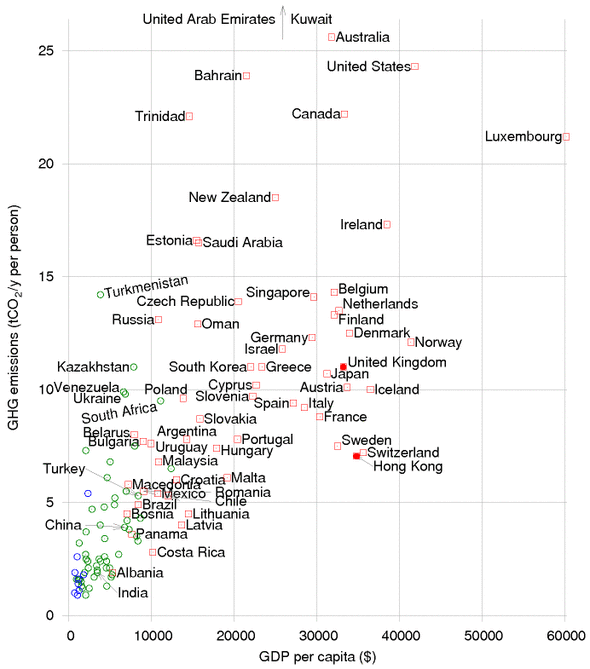
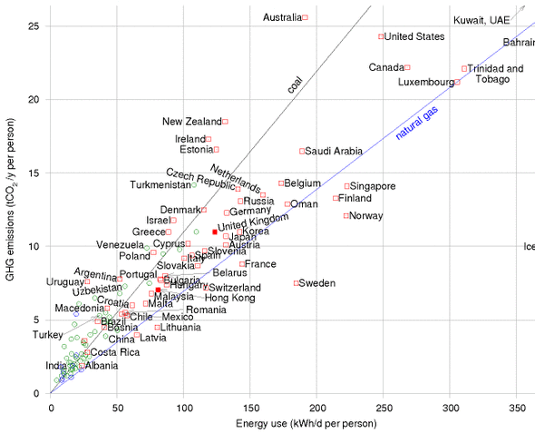

I Quick reference
SI Units
The watt. This SI unit is named after James Watt. As for all SI units whose names are derived from the proper name of a person, the first letter of its symbol is uppercase (W). But when an SI unit is spelled out, it should always be written in lowercase (watt), with the exception of the “degree Celsius.”
from wikipedia
SI stands for Système International. SI units are the ones that all engineers should use, to avoid losing spacecraft.
| Thing measured | unit name | symbol |
|---|---|---|
| energy | one joule | 1 J |
| power | one watt | 1 W |
| force | one newton | 1 N |
| length | one metre | 1 m |
| time | one second | 1 s |
| temperature | one kelvin | 1 K |
| prefix | kilo | mega | giga | tera | peta | exa |
|---|---|---|---|---|---|---|
| symbol | k | M | G | T | P | E |
| factor | 103 | 106 | 109 | 1012 | 1015 | 1018 |
| prefix | centi | milli | micro | nano | pico | femto |
|---|---|---|---|---|---|---|
| symbol | c | m | μ | n | p | f |
| factor | 10-2 | 10-3 | 10-6 | 10-9 | 10-12 | 10-15 |
Table I.1. SI units and prefixes.
My preferred units for energy, power, and transport efficiencies
My preferred units, expressed in SI:
| Thing measured | unit name | symbol | value in SI |
|---|---|---|---|
| energy | one kilowatt-hour | 1 kWh | 3 600 000 J |
| power | one kilowatt-hour per day | 1 kWh/d | (1000/24) W ≅ 40 W |
| force | one kilowatt-hour per 100 km | 1 kWh/100 km | 36 N |
| time | one hour | 1 h | 3600 s |
| one day | 1 d | 24 × 3600 s ≅ 105 s | |
| one year | 1 y | 365.25 × 24 × 3600 s ≅ π × 107 s | |
| force per mass | kilowatt-hour per ton-kilometre | 1 kWh/t-km | 3.6 m/s2 (≅ 0.37 g) |
And the units I use that are not SI:
| Thing measured | unit name | symbol | value |
|---|---|---|---|
| humans | person | p | |
| mass | ton | t | 1 t = 1000 kg |
| gigaton | Gt | 1 Gt = 109 × 1000 kg = 1 Pg | |
| transport | person-kilometre | p-km | |
| transport | ton-kilometre | t-km | |
| volume | litre | l | 1 l = 0.001 m3 |
| area | square kilometre | sq km, km2 | 1 sq km = 106 m2 |
| hectare | ha | 1 ha = 104 m2 | |
| Wales | 1 Wales = 21 000 km2 | ||
| London (Greater London) | 1 London = 1580 km2 | ||
| energy | Dinorwig | 1 Dinorwig = 9 GWh |
Table I.2. The units this book prefers. The upper panel gives those that are SI quantities under another name; the lower panel those that are not SI at all, kept because they are the units a reader already has a feel for.
Billions, millions, and other people’s prefixes
Throughout this book “a billion” (1 bn) means a standard American billion, that is, 109, or a thousand million. A trillion is 1012. The standard prefix meaning “billion” (109) is “giga.”
In continental Europe, the abbreviations Mio and Mrd denote a million and billion respectively. Mrd is short for milliard, which means 109.
The abbreviation m is often used to mean million, but this abbreviation is incompatible with the SI – think of mg (milligram) for example. So I don’t use m to mean million. Where some people use m, I replace it by M. For example, I use Mtoe for million tons of oil equivalent, and MtCO2 for million tons of CO2.
Annoying units
There’s a whole bunch of commonly used units that are annoying for various reasons. I’ve figured out what some of them mean. I list them here, to help you translate the media stories you read.
Homes
The “home” is commonly used when describing the power of renewable facilities. For example, “The £300 million Whitelee wind farm’s 140 turbines will generate 322 MW – enough to power 200 000 homes.” The “home” is defined by the BritishWind Energy Association to be a power of 4700 kWh per year [www.bwea.com/ukwed/operational.asp]. That’s 0.54 kW, or 13 kWh per day. (A few other organizations use 4000 kWh/y per household.)
The “home” annoys me because I worry that people confuse it with the total power consumption of the occupants of a home – but the latter is actually about 24 times bigger. The “home” covers the average domestic electricity consumption of a household, only. Not the household’s home heating. Nor their workplace. Nor their transport. Nor all the energy-consuming things that society does for them.
Incidentally, when they talk of the CO2 emissions of a “home,” the official exchange rate appears to be 4 tons CO2 per home per year.
Power stations
Energy saving ideas are sometimes described in terms of power stations. For example according to a BBC report on putting new everlasting LED lightbulbs in traffic lights, “The power savings would be huge – keeping the UK’s traffic lights running requires the equivalent of two mediumsized power stations.” news.bbc.co.uk/1/low/sci/tech/specials/ sheffield_99/449368.stm

Figure I.2. Powers of Britain’s coal power stations. I’ve highlighted in blue 8 GW of generating capacity that will close by 2015. 2500 MW, shared across Britain, is the same as 1 kWh per day per person.
What is a medium-sized power station? 10 MW? 50 MW? 100 MW? 500 MW? I don’t have a clue. A google search indicates that some people think it’s 30 MW, some 250 MW, some 500 MW (the most common choice), and some 800 MW. What a useless unit!
Surely it would be clearer for the article about traffic lights to express what it’s saying as a percentage? “Keeping the UK’s traffic lights running requires 11 MW of electricity, which is 0.03% of the UK’s electricity.” This would reveal how “huge” the power savings are.
Figure I.2 shows the powers of the UK’s 19 coal power stations.
Cars taken off the road
Some advertisements describe reductions in CO2 pollution in terms of the “equivalent number of cars taken off the road.” For example, Richard Branson says that if Virgin Trains’ Voyager fleet switched to 20% biodiesel – incidentally, don’t you feel it’s outrageous to call a train a “green biodieselpowered train” when it runs on 80% fossil fuels and just 20% biodiesel? – sorry, I got distracted. Richard Branson says that if Virgin Trains’ Voyager fleet switched to 20% biodiesel – I emphasize the “if” because people like Beardie are always getting media publicity for announcing that they are thinking of doing good things, but some of these fanfared initiatives are later quietly cancelled, such as the idea of towing aircraft around airports to make them greener – sorry, I got distracted again. Richard Branson says that if Virgin Trains’ Voyager fleet switched to 20% biodiesel, then there would be a reduction of 34 500 tons of CO2 per year, which is equivalent to “23 000 cars taken off the road.” This statement reveals the exchange rate:
“one car taken off the road” ↔︎ - 1.5 tons per year of CO2.
Calories
The calorie is annoying because the diet community call a kilocalorie a Calorie. 1 such food Calorie = 1000 calories.
2500 kcal = 3 kWh = 10 000 kJ = 10 MJ.
Barrels
An annoying unit loved by the oil community, along with the ton of oil. Why can’t they stick to one unit? A barrel of oil is 6.1 GJ or 1700 kWh.
Barrels are doubly annoying because there are multiple definitions of barrels, all having different volumes.
Here’s everything you need to know about barrels of oil. One barrel is 42 U.S. gallons, or 159 litres. One barrel of oil is 0.1364 tons of oil. One barrel of crude oil has an energy of 5.75 GJ. One barrel of oil weighs 136 kg. One ton of crude oil is 7.33 barrels and 42.1 GJ. The carbon-pollution rate of crude oil is 400 kg of CO2 per barrel. www.chemlink.com.au/conversions.htm. This means that when the price of oil is $100 per barrel, oil energy costs 6¢ per kWh. If there were a carbon tax of $250 per ton of CO2 on fossil fuels, that tax would increase the price of a barrel of oil by $100.
Gallons
The gallon would be a fine human-friendly unit, except the Yanks messed it up by defining the gallon differently from everyone else, as they did the pint and the quart. The US volumes are all roughly five-sixths of the correct volumes.
1 US gal = 3.785 l = 0.83 imperial gal. 1 imperial gal = 4.545 l.
Tons
Tons are annoying because there are short tons, long tons and metric tons. They are close enough that I don’t bother distinguishing between them. 1 short ton (2000 lb) = 907 kg; 1 long ton (2240 lb) = 1016 kg; 1 metric ton (or tonne) = 1000 kg.
BTU and quads
British thermal units are annoying because they are neither part of the Système International, nor are they of a useful size. Like the useless joule, they are too small, so you have to roll out silly prefixes like “quadrillion” (1015) to make practical use of them.
1 kJ is 0.947 BTU. 1 kWh is 3409 BTU.
A “quad” is 1 quadrillion BTU = 293 TWh.
Funny units
Cups of tea
Is this a way to make solar panels sound good? “Once all the 7 000 photovoltaic panels are in place, it is expected that the solar panels will create 180 000 units of renewable electricity each year – enough energy to make nine million cups of tea.” This announcement thus equates 1 kWh to 50 cups of tea.
As a unit of volume, 1 US cup (half a US pint) is officially 0.24 l; but a cup of tea or coffee is usually about 0.18 l. To raise 50 cups of water, at 0.18 l per cup, from 15 °C to 100 °C requires 1 kWh.
So “nine million cups of tea per year” is another way of saying “20 kW.”
Double-decker buses, Albert Halls and Wembley stadiums
“If everyone in the UK that could, installed cavity wall insulation, we could cut carbon dioxide emissions by a huge 7 million tons. That’s enough carbon dioxide to fill nearly 40 million double-decker buses or fill the new Wembley stadium 900 times!”
From which we learn the helpful fact that one Wembley is 44 000 double decker buses. Actually, Wembley’s bowl has a volume of 1 140 000 m3.
| mass of CO2 | ↔︎ | volume |
| 2 kg CO2 | ↔︎ | 1 m3 |
| 1 kg CO2 | ↔︎ | 500 litres |
| 44 g CO2 | ↔︎ | 2 litres |
| 2 g CO2 | ↔︎ | 1 litre |
Table I.3. Volume-to-mass conversion.

Figure I.4. A twenty-foot container (1 TEU).
| hectare | = | 104 m2 |
| acre | = | 4050 m2 |
| square mile | = | 2.6 km2 |
| square foot | = | 0.093 m2 |
| square yard | = | 0.84 m2 |
Table I.5. Areas.
“If every household installed just one energy saving light bulb, there would be enough carbon dioxide saved to fill the Royal Albert Hall 1,980 times!” (An Albert Hall is 100 000 m3.)
Expressing amounts of CO2 by volume rather than mass is a great way to make them sound big. Should “1 kg of CO2 per day” sound too small, just say “200 000 litres of CO2 per year”!
More volumes
A container is 2.4 m wide by 2.6 m high by (6.1 or 12.2) metres long (for the TEU and FEU respectively).
One TEU is the size of a small 20-foot container – an interior volume of about 33 m3. Most containers you see today are 40-foot containers with a size of 2 TEU. A 40-foot container weighs 4 tons and can carry 26 tons of stuff; its volume is 67.5 m3.
A swimming pool has a volume of about 3000 m3.
One double decker bus has a volume of 100 m3.
One hot air balloon is 2500 m3.
The great pyramid at Giza has a volume of 2 500 000 cubic metres.
Areas
The area of the earth’s surface is 500 × 106 km2; the land area is 150 × 106 km2.
My typical British 3-bedroom house has a floor area of 88 m2. In the USA, the average size of a single-family house is 2330 square feet (216 m2).
| Land use | area per person (m2) | percentage |
|---|---|---|
| – domestic buildings | 30 | 1.1 |
| – domestic gardens | 114 | 4.3 |
| – other buildings | 18 | 0.66 |
| – roads | 60 | 2.2 |
| – railways | 3.6 | 0.13 |
| – paths | 2.9 | 0.11 |
| – greenspace | 2335 | 87.5 |
| – water | 69 | 2.6 |
| – other land uses | 37 | 1.4 |
| Total | 2670 | 100 |
Table I.6. Land areas, in England, devoted to different uses. Source: Generalized Land Use Database Statistics for England 2005. [3b7zdf]
Powers
| 1000 BTU per hour | = | 0.3 kW | = | 7 kWh/d |
| 1 horse power (1 hp or 1 cv or 1 ps) | = | 0.75 kW | = | 18 kWh/d |
| 1 kW | = | 24 kWh/d |
| 1 therm | = | 29.31 kWh |
| 1000 Btu | = | 0.2931 kWh |
| 1 MJ | = | 0.2778 kWh |
| 1 GJ | = | 277.8 kWh |
| 1 toe (ton of oil equivalent) | = | 11 630 kWh |
| 1 kcal | = | 1.163 × 10-3 kWh |
| 1 kWh | = | 0.03412 | 3412 | 3.6 | 86 × 10-6 | 859.7 |
| therms | Btu | MJ | toe | kcal |
Box I.7. How other energy and power units relate to the kilowatt-hour and the kilowatt-hour per day.
If we add the suffix “e” to a power, this means that we’re explicitly talking about electrical power. So, for example, a power station’s output might be 1 GW(e), while it uses chemical power at a rate of 2.5 GW. Similarly the suffix “th” may be added to indicate that a quantity of energy is thermal energy. The same suffixes can be added to amounts of energy. “My house uses 2 kWh(e) of electricity per day.”
If we add a suffix “p” to a power, this indicates that it’s a “peak” power, or capacity. For example, 10 m2 of panels might have a power of 1 kWp.
1 kWh/d = 1/24 kW.
1 toe/y = 1.33 kW.
Petrol comes out of a petrol pump at about half a litre per second. So that’s 5 kWh per second, or 18 MW.
The power of a Formula One racing car is 560 kW.
UK electricity consumption is 17 kWh per day per person, or 42.5 GW per UK.
“One ton” of air-conditioning = 3.5 kW.
World power consumption
World power consumption is 15 TW. World electricity consumption is 2 TW.
Money
Added in the 2026 revision. This book is about Britain, so figures taken from foreign sources are given with a sterling equivalent alongside — the original first where it is the source’s own unit, the conversion in brackets. Mixed units are kept deliberately: a reader checking a figure against its source should find the number the source printed.
Conversions throughout this edition use approximate mid-2026 rates, rounded to two significant figures:
| to £1 | |
|---|---|
| US dollar | 1.27 |
| Euro | 1.16 |
| Swedish krona | 12.2 |
These are working figures, not valuations. Currencies move by more than 10% in a year, and several of the numbers converted here are themselves ranges or single reported deals, so a conversion carrying more precision than the original would be false. Where a figure is a price — a cost per kilowatt, per tonne, per kilowatt-hour — the conversion is what matters to a British reader and is given. Where it is a citation, a company valuation or a historical American budget line, the original stands alone.
Useful conversion factors
To change TWh per year to GW, divide by 9.
1 kWh/d per person is the same as 2.5 GW per UK, or 22 TWh/y per UK
To change mpg (miles per UK gallon) to km per litre, divide by 3.
At room temperature, 1 kT = 1⁄40eV
At room temperature, 1 kT per molecule = 2.5 kJ/mol.
| Mode | kWh/t-km |
|---|---|
| inland water | 0.083 |
| rail | 0.083 |
| truck | 0.75 |
| air | 2.8 |
| oil pipeline | 0.056 |
| gas pipeline | 0.47 |
| int’l water container | 0.056 |
| int’l water bulk | 0.056 |
| int’l water tanker | 0.028 |
Table I.8. Energy intensity of transport modes in the USA. Source: Weber and Matthews (2008).
Meter reading
How to convert your gas-meter reading into kilowatt-hours:
- If the meter reads 100s of cubic feet, take the number of units used, and multiply by 32.32 to get the number of kWh.
- If the meter reads cubic metres, take the number of units used, and multiply by 11.42 to get the number of kWh.
Calorific values of fuels
Crude oil: 37 MJ/l; 10.3 kWh/l. Natural gas: 38 MJ/m3. (Methane has a density of 1.819 kg/m3.) 1 ton of coal: 29.3 GJ; 8000 kWh. Fusion energy of ordinary water: 1800 kWh per litre.
See also table 26.14, and table D.3.
Heat capacities
The heat capacity of air is 1 kJ/kg/°C, or 29 J/mol/°C. The density of air is 1.2 kg/m3. So the heat capacity of air per unit volume is 1.2 kJ/m3/°C.
Latent heat of vaporization of water: 2257.92 kJ/kg. Water vapour’s heat capacity: 1.87 kJ/kg/°C. Water’s heat capacity is 4.2 kJ/l/°C.
Steam’s density is 0.590 kg/m3.
Pressure
Atmospheric pressure: 1 bar ≅ 105 Pa (pascal). Pressure under 1000 m of water: 100 bar. Pressure under 3000 m of water: 300 bar.
Money
I assumed the following exchange rates when discussing money: €1 = $1.26; £1 = $1.85 ; $1 = $1.12 Canadian. These exchange rates were correct in mid-2006.
Greenhouse gas conversion factors
| France | 83 |
| Sweden | 87 |
| Canada | 220 |
| Austria | 250 |
| Belgium | 335 |
| European Union | 353 |
| Finland | 399 |
| Spain | 408 |
| Japan | 483 |
| Portugal | 525 |
| United Kingdom | 580 |
| Luxembourg | 590 |
| Germany | 601 |
| USA | 613 |
| Netherlands | 652 |
| Italy | 667 |
| Ireland | 784 |
| Greece | 864 |
| Denmark | 881 |
Figure I.9. Carbon intensity of electricity production (g CO2 per kWh of electricity).
| Fuel type |
emissions (g CO2 per kWh of chemical energy) |
|---|---|
| natural gas | 190 |
| refinery gas | 200 |
| ethane | 200 |
| LPG | 210 |
| jet kerosene | 240 |
| petrol | 240 |
| gas/diesel oil | 250 |
| heavy fuel oil | 260 |
| naptha | 260 |
| coking coal | 300 |
| coal | 300 |
| petroleum coke | 340 |
Figure I.10. Emissions associated with fuel combustion. Source: DEFRA’s Environmental Reporting Guidelines for Company Reporting on Greenhouse Gas Emissions.

Figure I.11. Greenhouse-gas emissions per capita, versus GDP per capita, in purchasing-power-parity US dollars. Squares show countries having “high human development;” circles, “medium” or “low.” See also figures 30.1 and 18.4. Source: UNDP Human Development Report, 2007. [3av4s9]

Figure I.12. Greenhouse-gas emissions per capita, versus power consumption per capita. The lines show the emission-intensities of coal and natural gas. Squares show countries having “high human development;” circles, “medium” or “low.” See also figures 30.1 (p231) and 18.4 (p105). Source: UNDP Human Development Report, 2007.